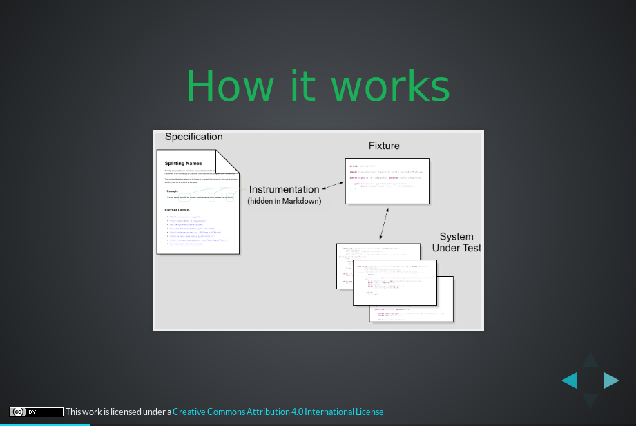
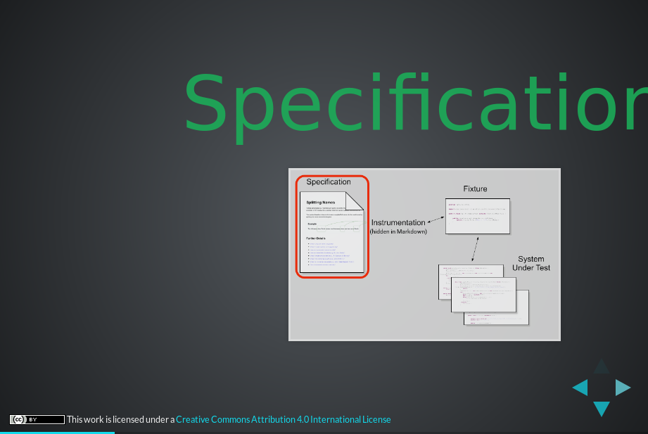
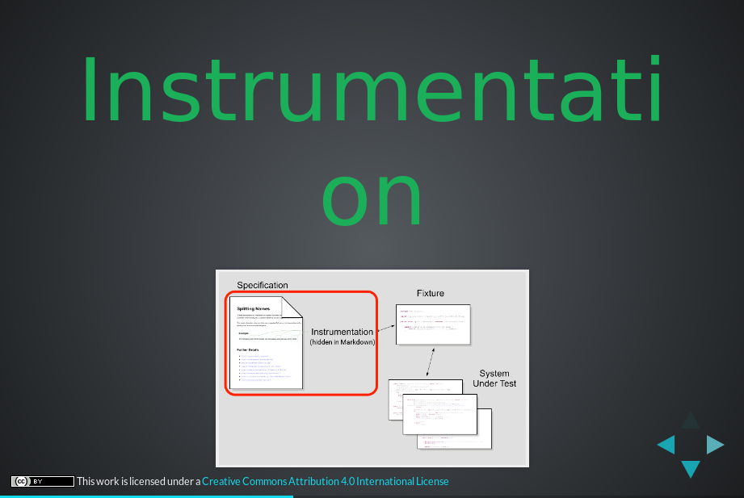
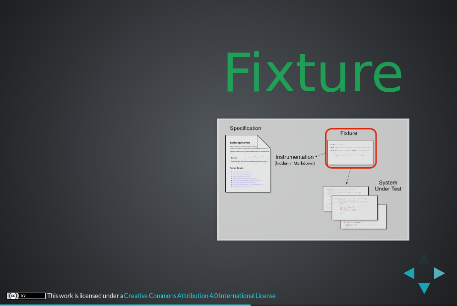
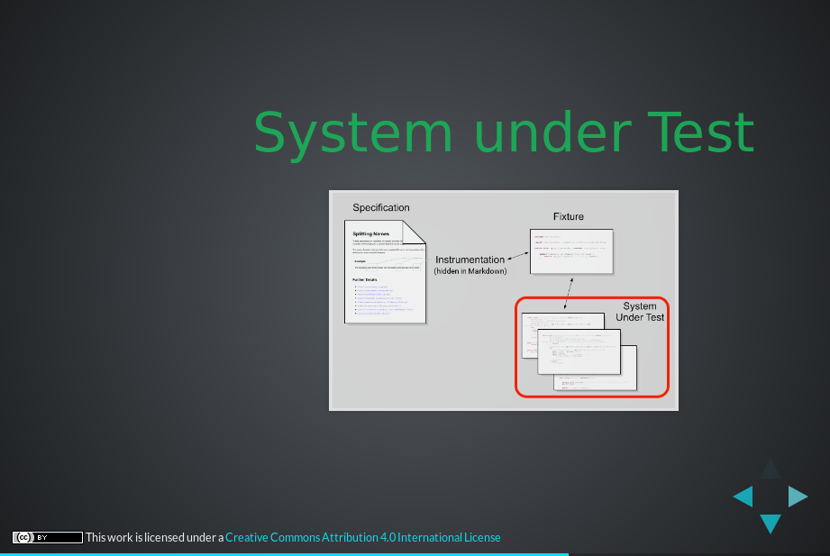
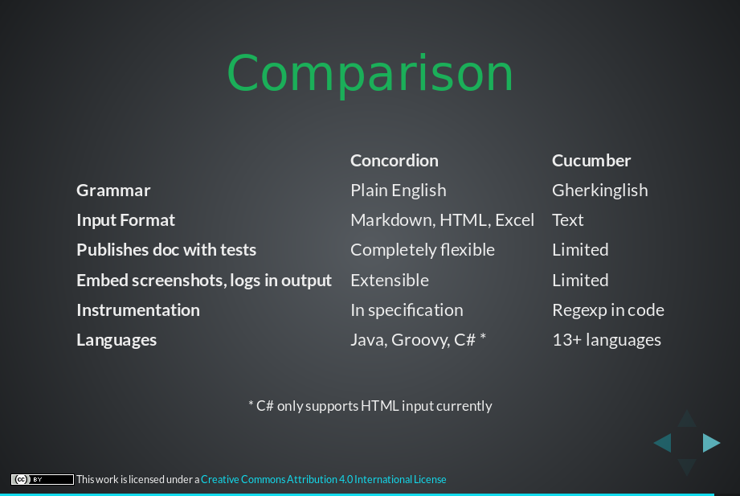
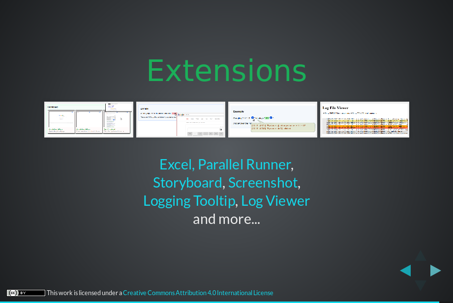

| Row | Level | Message | Time | File Of Caller | Line Of Caller |
|---|---|---|---|---|---|
| 1. | INFO | Starting example concordion-presentation for test fixture example.concordion.ConcordionPresentationFixture | 16:40:59.464 | CubanoDemoFixtureLogger.java | 15 |
| 2. | DEBUG | Starting browser | 16:40:59.558 | Browser.java | 153 |
| 3. | TRACE | Property wdm.proxy not found in /webdrivermanager.properties, using default values (in /webdrivermanager.properties) | 16:40:59.617 | Config.java | 207 |
| 4. | TRACE | Property wdm.proxy not found in /webdrivermanager.properties, using blank value | 16:40:59.621 | Config.java | 214 |
| 5. | TRACE | Managing geckodriver arch=64 version=0.24.0 getLatest=false cache=true | 16:41:00.081 | WebDriverManager.java | 504 |
| 6. | TRACE | Checking if geckodriver exists in cache | 16:41:00.085 | WebDriverManager.java | 807 |
| 7. | TRACE | Target path /home/travis/.m2/repository/webdriver | 16:41:00.089 | Downloader.java | 116 |
| 8. | TRACE | geckodriver not found in cache | 16:41:00.117 | WebDriverManager.java | 834 |
| 9. | INFO | Reading https://api.github.com/repos/mozilla/geckodriver/releases to seek geckodriver | 16:41:00.122 | WebDriverManager.java | 1069 |
| 10. | TRACE | Get version 0.24.0 of io.github.bonigarcia.wdm.GitHubApi@1ec356 | 16:41:00.773 | WebDriverManager.java | 1109 |
| 11. | TRACE | Get version 0.24.0 of io.github.bonigarcia.wdm.GitHubApi@63565649 | 16:41:00.777 | WebDriverManager.java | 1109 |
| 12. | TRACE | Get version 0.24.0 of io.github.bonigarcia.wdm.GitHubApi@505c1aa4 | 16:41:00.779 | WebDriverManager.java | 1109 |
| 13. | TRACE | Get version 0.24.0 of io.github.bonigarcia.wdm.GitHubApi@4aed730b | 16:41:00.780 | WebDriverManager.java | 1109 |
| 14. | TRACE | Get version 0.24.0 of io.github.bonigarcia.wdm.GitHubApi@3c9f0d73 | 16:41:00.782 | WebDriverManager.java | 1109 |
| 15. | TRACE | Get version 0.24.0 of io.github.bonigarcia.wdm.GitHubApi@6d2af0b7 | 16:41:00.784 | WebDriverManager.java | 1109 |
| 16. | TRACE | Get version 0.24.0 of io.github.bonigarcia.wdm.GitHubApi@5d134e8c | 16:41:00.785 | WebDriverManager.java | 1109 |
| 17. | TRACE | All URLs: [https://github.com/mozilla/geckodriver/releases/download/v0.24.0/geckodriver-v0.24.0-linux32.tar.gz, https://github.com/mozilla/geckodriver/releases/download/v0.24.0/geckodriver-v0.24.0-linux64.tar.gz, https://github.com/mozilla/geckodriver/releases/download/v0.24.0/geckodriver-v0.24.0-macos.tar.gz, https://github.com/mozilla/geckodriver/releases/download/v0.24.0/geckodriver-v0.24.0-win32.zip, https://github.com/mozilla/geckodriver/releases/download/v0.24.0/geckodriver-v0.24.0-win64.zip] | 16:41:00.786 | WebDriverManager.java | 733 |
| 18. | TRACE | Candidate URLs: [https://github.com/mozilla/geckodriver/releases/download/v0.24.0/geckodriver-v0.24.0-linux32.tar.gz, https://github.com/mozilla/geckodriver/releases/download/v0.24.0/geckodriver-v0.24.0-linux64.tar.gz, https://github.com/mozilla/geckodriver/releases/download/v0.24.0/geckodriver-v0.24.0-macos.tar.gz, https://github.com/mozilla/geckodriver/releases/download/v0.24.0/geckodriver-v0.24.0-win32.zip, https://github.com/mozilla/geckodriver/releases/download/v0.24.0/geckodriver-v0.24.0-win64.zip] | 16:41:00.787 | WebDriverManager.java | 740 |
| 19. | TRACE | URLs before filtering by OS (LINUX): [https://github.com/mozilla/geckodriver/releases/download/v0.24.0/geckodriver-v0.24.0-linux32.tar.gz, https://github.com/mozilla/geckodriver/releases/download/v0.24.0/geckodriver-v0.24.0-linux64.tar.gz, https://github.com/mozilla/geckodriver/releases/download/v0.24.0/geckodriver-v0.24.0-macos.tar.gz, https://github.com/mozilla/geckodriver/releases/download/v0.24.0/geckodriver-v0.24.0-win32.zip, https://github.com/mozilla/geckodriver/releases/download/v0.24.0/geckodriver-v0.24.0-win64.zip] | 16:41:00.798 | UrlFilter.java | 47 |
| 20. | TRACE | URLs after filtering by OS (LINUX): [https://github.com/mozilla/geckodriver/releases/download/v0.24.0/geckodriver-v0.24.0-linux32.tar.gz, https://github.com/mozilla/geckodriver/releases/download/v0.24.0/geckodriver-v0.24.0-linux64.tar.gz] | 16:41:00.799 | UrlFilter.java | 62 |
| 21. | TRACE | URLs before filtering by architecture (64): [https://github.com/mozilla/geckodriver/releases/download/v0.24.0/geckodriver-v0.24.0-linux32.tar.gz, https://github.com/mozilla/geckodriver/releases/download/v0.24.0/geckodriver-v0.24.0-linux64.tar.gz] | 16:41:00.800 | UrlFilter.java | 68 |
| 22. | TRACE | URLs after filtering by architecture (64): [https://github.com/mozilla/geckodriver/releases/download/v0.24.0/geckodriver-v0.24.0-linux64.tar.gz] | 16:41:00.803 | UrlFilter.java | 86 |
| 23. | TRACE | Property wdm.ignoreVersions not found in /webdrivermanager.properties, using default values (in /webdrivermanager.properties) | 16:41:00.804 | Config.java | 207 |
| 24. | TRACE | Property wdm.ignoreVersions not found in /webdrivermanager.properties, using blank value | 16:41:00.813 | Config.java | 214 |
| 25. | TRACE | Property wdm.ignoreVersions not found in /webdrivermanager.properties, using default values (in /webdrivermanager.properties) | 16:41:00.814 | Config.java | 207 |
| 26. | TRACE | Property wdm.ignoreVersions not found in /webdrivermanager.properties, using blank value | 16:41:00.815 | Config.java | 214 |
| 27. | TRACE | URLs before filtering by ignored versions ([]): [https://github.com/mozilla/geckodriver/releases/download/v0.24.0/geckodriver-v0.24.0-linux64.tar.gz] | 16:41:00.816 | UrlFilter.java | 119 |
| 28. | TRACE | URLs after filtering by ignored versions ([]): [https://github.com/mozilla/geckodriver/releases/download/v0.24.0/geckodriver-v0.24.0-linux64.tar.gz] | 16:41:00.834 | UrlFilter.java | 134 |
| 29. | TRACE | getTarget 0.24.0 https://github.com/mozilla/geckodriver/releases/download/v0.24.0/geckodriver-v0.24.0-linux64.tar.gz | 16:41:00.835 | Downloader.java | 87 |
| 30. | TRACE | Target path /home/travis/.m2/repository/webdriver | 16:41:00.837 | Downloader.java | 116 |
| 31. | TRACE | Target file for URL https://github.com/mozilla/geckodriver/releases/download/v0.24.0/geckodriver-v0.24.0-linux64.tar.gz version 0.24.0 = /home/travis/.m2/repository/webdriver/geckodriver/linux64/0.24.0/geckodriver-v0.24.0-linux64.tar.gz | 16:41:00.837 | Downloader.java | 108 |
| 32. | INFO | Downloading https://github.com/mozilla/geckodriver/releases/download/v0.24.0/geckodriver-v0.24.0-linux64.tar.gz | 16:41:00.838 | Downloader.java | 128 |
| 33. | TRACE | Target folder /home/travis/.m2/repository/webdriver/geckodriver/linux64/0.24.0 ... using temporal file /tmp/4541292858491451214/geckodriver-v0.24.0-linux64.tar.gz | 16:41:00.856 | Downloader.java | 133 |
| 34. | INFO | Extracting binary from compressed file geckodriver-v0.24.0-linux64.tar.gz | 16:41:01.347 | Downloader.java | 183 |
| 35. | TRACE | unTarGz /tmp/4541292858491451214/geckodriver-v0.24.0-linux64.tar.gz | 16:41:01.541 | Downloader.java | 277 |
| 36. | TRACE | Deleting file /tmp/4541292858491451214/geckodriver-v0.24.0-linux64.tar.gz | 16:41:01.543 | Downloader.java | 322 |
| 37. | TRACE | Found binary in post-download: /tmp/4541292858491451214/geckodriver | 16:41:01.546 | WebDriverManager.java | 462 |
| 38. | TRACE | Resulting binary file /tmp/4541292858491451214/geckodriver | 16:41:01.547 | Downloader.java | 203 |
| 39. | TRACE | Deleting folder /tmp/4541292858491451214 | 16:41:01.548 | Downloader.java | 332 |
| 40. | TRACE | Binary driver after extraction /home/travis/.m2/repository/webdriver/geckodriver/linux64/0.24.0/geckodriver | 16:41:01.549 | Downloader.java | 153 |
| 41. | INFO | Exporting webdriver.gecko.driver as /home/travis/.m2/repository/webdriver/geckodriver/linux64/0.24.0/geckodriver | 16:41:01.550 | WebDriverManager.java | 1042 |
| 42. | DEBUG | Navigating to ⇒ https://concordion.org/presentations/2017-04-Concordion-2.0/#/ | 16:41:05.112 | TestWorker.java | 108 |
| 43. Page Object: ConcordionPresentationPage | |||||
| 44. | DEBUG | Wait for any ajax requests to complete | 16:41:06.161 | PageObject.java | 40 |
| 45. | TRACE | Run JavaScript ⇒ | 16:41:06.193 | TestWorker.java | 108 |
|
|
|||||
| 46. | TRACE | Run JavaScript ⇒ | 16:41:06.219 | TestWorker.java | 108 |
|
|
|||||
| 47. | TRACE | Find element ⇒ By.className: Spinner | 16:41:06.234 | TestWorker.java | 108 |
| 48. | DEBUG | Checking ConcordionPresentationPage loads within 10 seconds | 16:41:06.256 | ActionTimer.java | 63 |
| 49. | TRACE | Find element ⇒ By.xpath: //a[text() = '@nigel_charman'] | 16:41:06.266 | TestWorker.java | 108 |
| 50. | TRACE | ConcordionPresentationPage loaded in 0 seconds Current url: https://concordion.org/presentations/2017-04-Concordion-2.0/#/ |
16:41:06.389 | PageObject.java | 55 |
| 51. | TRACE | Find element ⇒ By.className: navigate-right | 16:41:06.395 | TestWorker.java | 108 |
| 52. | DEBUG | Clicking '' | 16:41:06.696 | ConcordionPresentationPage.java | 36 |
| 53. | DEBUG | Navigating to ⇒ https://concordion.org/presentations/2017-04-Concordion-2.0/#/2 | 16:41:06.703 | TestWorker.java | 108 |
| 54. Page Object: ConcordionIsATestRunnerPage | |||||
| 55. | DEBUG | Wait for any ajax requests to complete | 16:41:06.743 | PageObject.java | 40 |
| 56. | TRACE | Run JavaScript ⇒ | 16:41:06.785 | TestWorker.java | 108 |
|
|
|||||
| 57. | TRACE | Run JavaScript ⇒ | 16:41:06.802 | TestWorker.java | 108 |
|
|
|||||
| 58. | TRACE | Find element ⇒ By.className: Spinner | 16:41:06.812 | TestWorker.java | 108 |
| 59. | DEBUG | Checking ConcordionIsATestRunnerPage loads within 10 seconds | 16:41:06.821 | ActionTimer.java | 63 |
| 60. | TRACE | Find element ⇒ By.xpath: //h3[text()='Concordion is a test runner'] | 16:41:06.827 | TestWorker.java | 108 |
| 61. | TRACE | Find element ⇒ By.className: navigate-right | 16:41:06.917 | TestWorker.java | 108 |
| 62. | TRACE | Find element ⇒ By.xpath: //a[text() = '@nigel_charman'] | 16:41:07.003 | TestWorker.java | 108 |
| 63. | TRACE | ConcordionIsATestRunnerPage loaded in 0 seconds Current url: https://concordion.org/presentations/2017-04-Concordion-2.0/#/2 |
16:41:07.076 | PageObject.java | 55 |
| 64. | TRACE | Find element ⇒ By.className: navigate-right | 16:41:07.086 | TestWorker.java | 108 |
| 65. | DEBUG | Clicking '' | 16:41:07.267 | ConcordionIsATestRunnerPage.java | 36 |
| 66. | DEBUG | Click ⇒ By.class name: navigate-right | 16:41:07.281 | TestWorker.java | 108 |
| 67. Page Object: ConcordionForExecutableSpecsPage | |||||
| 68. | DEBUG | Wait for any ajax requests to complete | 16:41:07.507 | PageObject.java | 40 |
| 69. | TRACE | Run JavaScript ⇒ | 16:41:07.528 | TestWorker.java | 108 |
|
|
|||||
| 70. | TRACE | Run JavaScript ⇒ | 16:41:07.543 | TestWorker.java | 108 |
|
|
|||||
| 71. | TRACE | Find element ⇒ By.className: Spinner | 16:41:07.556 | TestWorker.java | 108 |
| 72. | DEBUG | Checking ConcordionForExecutableSpecsPage loads within 10 seconds | 16:41:07.578 | ActionTimer.java | 63 |
| 73. | TRACE | Find element ⇒ By.xpath: //h3[text()='Concordion is a test runner'] | 16:41:07.586 | TestWorker.java | 108 |
| 74. | TRACE | Find element ⇒ By.xpath: //span[text()='for executable specifications'] | 16:41:07.675 | TestWorker.java | 108 |
| 75. | TRACE | ConcordionForExecutableSpecsPage loaded in 0 seconds Current url: https://concordion.org/presentations/2017-04-Concordion-2.0/#/2 |
16:41:07.763 | PageObject.java | 55 |
| 76. | TRACE | Find element ⇒ By.className: navigate-right | 16:41:07.767 | TestWorker.java | 108 |
| 77. | DEBUG | Clicking '' | 16:41:07.906 | ConcordionForExecutableSpecsPage.java | 36 |
| 78. | DEBUG | Click ⇒ By.class name: navigate-right | 16:41:07.917 | TestWorker.java | 108 |
| 79. Page Object: ConcordionBeautifulLivingDocsPage | |||||
| 80. | DEBUG | Wait for any ajax requests to complete | 16:41:08.133 | PageObject.java | 40 |
| 81. | TRACE | Run JavaScript ⇒ | 16:41:08.151 | TestWorker.java | 108 |
|
|
|||||
| 82. | TRACE | Run JavaScript ⇒ | 16:41:08.165 | TestWorker.java | 108 |
|
|
|||||
| 83. | TRACE | Find element ⇒ By.className: Spinner | 16:41:08.173 | TestWorker.java | 108 |
| 84. | DEBUG | Checking ConcordionBeautifulLivingDocsPage loads within 10 seconds | 16:41:08.182 | ActionTimer.java | 63 |
| 85. | TRACE | Find element ⇒ By.xpath: //h3[text()='Concordion is a test runner'] | 16:41:08.183 | TestWorker.java | 108 |
| 86. | TRACE | Find element ⇒ By.xpath: //span[text()='for executable specifications'] | 16:41:08.254 | TestWorker.java | 108 |
| 87. | TRACE | Find element ⇒ By.xpath: //span[text()='that creates beautiful living documentation'] | 16:41:08.333 | TestWorker.java | 108 |
| 88. | TRACE | ConcordionBeautifulLivingDocsPage loaded in 0 seconds Current url: https://concordion.org/presentations/2017-04-Concordion-2.0/#/2 |
16:41:08.408 | PageObject.java | 55 |
| 89. | TRACE | Find element ⇒ By.className: navigate-right | 16:41:08.412 | TestWorker.java | 108 |
| 90. | DEBUG | Clicking '' | 16:41:08.542 | ConcordionBeautifulLivingDocsPage.java | 41 |
| 91. | DEBUG | Navigating to ⇒ https://concordion.org/presentations/2017-04-Concordion-2.0/#/5 | 16:41:08.547 | TestWorker.java | 108 |
| 92. Page Object: ConcordionHowItWorksPage | |||||
| 93. | DEBUG | Wait for any ajax requests to complete | 16:41:08.570 | PageObject.java | 40 |
| 94. | TRACE | Run JavaScript ⇒ | 16:41:08.595 | TestWorker.java | 108 |
|
|
|||||
| 95. | TRACE | Run JavaScript ⇒ | 16:41:08.611 | TestWorker.java | 108 |
|
|
|||||
| 96. | TRACE | Find element ⇒ By.className: Spinner | 16:41:08.620 | TestWorker.java | 108 |
| 97. | DEBUG | Checking ConcordionHowItWorksPage loads within 10 seconds | 16:41:08.628 | ActionTimer.java | 63 |
| 98. | TRACE | Find element ⇒ By.xpath: //h2[text()='How it works'] | 16:41:08.633 | TestWorker.java | 108 |
| 99. | TRACE | Find element ⇒ By.className: navigate-right | 16:41:08.706 | TestWorker.java | 108 |
| 100. | TRACE | Find element ⇒ By.xpath: //h3[text()='Downloads'] | 16:41:08.786 | TestWorker.java | 108 |
| 101. | TRACE | ConcordionHowItWorksPage loaded in 0 seconds Current url: https://concordion.org/presentations/2017-04-Concordion-2.0/#/5 |
16:41:08.856 | PageObject.java | 55 |
| 102. | TRACE | Find element ⇒ By.className: navigate-right | 16:41:08.859 | TestWorker.java | 108 |
| 103. | DEBUG | Clicking '' | 16:41:09.031 | ConcordionHowItWorksPage.java | 37 |
|  | |||||
| 104. | DEBUG | Click ⇒ By.class name: navigate-right | 16:41:09.037 | TestWorker.java | 108 |
| 105. Page Object: ConcordionSpecificationPage | |||||
| 106. | DEBUG | Wait for any ajax requests to complete | 16:41:09.072 | PageObject.java | 40 |
| 107. | TRACE | Run JavaScript ⇒ | 16:41:09.091 | TestWorker.java | 108 |
|
|
|||||
| 108. | TRACE | Run JavaScript ⇒ | 16:41:09.101 | TestWorker.java | 108 |
|
|
|||||
| 109. | TRACE | Find element ⇒ By.className: Spinner | 16:41:09.107 | TestWorker.java | 108 |
| 110. | DEBUG | Checking ConcordionSpecificationPage loads within 10 seconds | 16:41:09.116 | ActionTimer.java | 63 |
| 111. | TRACE | Find element ⇒ By.xpath: //h1[text()='Specification'] | 16:41:09.121 | TestWorker.java | 108 |
| 112. | TRACE | Find element ⇒ By.className: navigate-right | 16:41:09.189 | TestWorker.java | 108 |
| 113. | TRACE | Find element ⇒ By.xpath: //h2[text()='How it works'] | 16:41:09.274 | TestWorker.java | 108 |
| 114. | TRACE | ConcordionSpecificationPage loaded in 0 seconds Current url: https://concordion.org/presentations/2017-04-Concordion-2.0/#/6 |
16:41:09.357 | PageObject.java | 55 |
| 115. | TRACE | Find element ⇒ By.className: navigate-right | 16:41:09.360 | TestWorker.java | 108 |
| 116. | DEBUG | Clicking '' | 16:41:09.507 | ConcordionSpecificationPage.java | 37 |
|  | |||||
| 117. | DEBUG | Click ⇒ By.class name: navigate-right | 16:41:09.517 | TestWorker.java | 108 |
| 118. Page Object: ConcordionInstrumentationPage | |||||
| 119. | DEBUG | Wait for any ajax requests to complete | 16:41:09.546 | PageObject.java | 40 |
| 120. | TRACE | Run JavaScript ⇒ | 16:41:09.562 | TestWorker.java | 108 |
|
|
|||||
| 121. | TRACE | Run JavaScript ⇒ | 16:41:09.572 | TestWorker.java | 108 |
|
|
|||||
| 122. | TRACE | Find element ⇒ By.className: Spinner | 16:41:09.579 | TestWorker.java | 108 |
| 123. | DEBUG | Checking ConcordionInstrumentationPage loads within 10 seconds | 16:41:09.588 | ActionTimer.java | 63 |
| 124. | TRACE | Find element ⇒ By.xpath: //h1[text()='Instrumentation'] | 16:41:09.589 | TestWorker.java | 108 |
| 125. | TRACE | Find element ⇒ By.className: navigate-right | 16:41:09.661 | TestWorker.java | 108 |
| 126. | TRACE | Find element ⇒ By.xpath: //h1[text()='Specification'] | 16:41:09.744 | TestWorker.java | 108 |
| 127. | TRACE | ConcordionInstrumentationPage loaded in 0 seconds Current url: https://concordion.org/presentations/2017-04-Concordion-2.0/#/7 |
16:41:10.380 | PageObject.java | 55 |
| 128. | TRACE | Find element ⇒ By.className: navigate-right | 16:41:10.385 | TestWorker.java | 108 |
| 129. | DEBUG | Clicking '' | 16:41:10.507 | ConcordionInstrumentationPage.java | 37 |
|  | |||||
| 130. | DEBUG | Click ⇒ By.class name: navigate-right | 16:41:10.513 | TestWorker.java | 108 |
| 131. Page Object: ConcordionFixturePage | |||||
| 132. | DEBUG | Wait for any ajax requests to complete | 16:41:10.548 | PageObject.java | 40 |
| 133. | TRACE | Run JavaScript ⇒ | 16:41:10.566 | TestWorker.java | 108 |
|
|
|||||
| 134. | TRACE | Run JavaScript ⇒ | 16:41:10.584 | TestWorker.java | 108 |
|
|
|||||
| 135. | TRACE | Find element ⇒ By.className: Spinner | 16:41:10.594 | TestWorker.java | 108 |
| 136. | DEBUG | Checking ConcordionFixturePage loads within 10 seconds | 16:41:10.601 | ActionTimer.java | 63 |
| 137. | TRACE | Find element ⇒ By.xpath: //h1[text()='Fixture'] | 16:41:10.606 | TestWorker.java | 108 |
| 138. | TRACE | Find element ⇒ By.className: navigate-right | 16:41:10.678 | TestWorker.java | 108 |
| 139. | TRACE | Find element ⇒ By.xpath: //h1[text()='Instrumentation'] | 16:41:10.752 | TestWorker.java | 108 |
| 140. | TRACE | ConcordionFixturePage loaded in 0 seconds Current url: https://concordion.org/presentations/2017-04-Concordion-2.0/#/8 |
16:41:10.814 | PageObject.java | 55 |
| 141. | TRACE | Find element ⇒ By.className: navigate-right | 16:41:10.818 | TestWorker.java | 108 |
| 142. | DEBUG | Clicking '' | 16:41:10.939 | ConcordionFixturePage.java | 37 |
|  | |||||
| 143. | DEBUG | Click ⇒ By.class name: navigate-right | 16:41:10.950 | TestWorker.java | 108 |
| 144. Page Object: ConcordionSUTPage | |||||
| 145. | DEBUG | Wait for any ajax requests to complete | 16:41:10.982 | PageObject.java | 40 |
| 146. | TRACE | Run JavaScript ⇒ | 16:41:11.003 | TestWorker.java | 108 |
|
|
|||||
| 147. | TRACE | Run JavaScript ⇒ | 16:41:11.010 | TestWorker.java | 108 |
|
|
|||||
| 148. | TRACE | Find element ⇒ By.className: Spinner | 16:41:11.018 | TestWorker.java | 108 |
| 149. | DEBUG | Checking ConcordionSUTPage loads within 10 seconds | 16:41:11.023 | ActionTimer.java | 63 |
| 150. | TRACE | Find element ⇒ By.xpath: //h2[text()='System under Test'] | 16:41:11.025 | TestWorker.java | 108 |
| 151. | TRACE | Find element ⇒ By.className: navigate-right | 16:41:11.094 | TestWorker.java | 108 |
| 152. | TRACE | Find element ⇒ By.xpath: //h1[text()='Fixture'] | 16:41:11.252 | TestWorker.java | 108 |
| 153. | TRACE | ConcordionSUTPage loaded in 0 seconds Current url: https://concordion.org/presentations/2017-04-Concordion-2.0/#/9 |
16:41:11.322 | PageObject.java | 55 |
| 154. | TRACE | Find element ⇒ By.className: navigate-right | 16:41:11.325 | TestWorker.java | 108 |
| 155. | DEBUG | Clicking '' | 16:41:11.486 | ConcordionSUTPage.java | 38 |
|  | |||||
| 156. | DEBUG | Navigating to ⇒ https://concordion.org/presentations/2017-04-Concordion-2.0/#/12 | 16:41:11.488 | TestWorker.java | 108 |
| 157. Page Object: ConcordionComparisonPage | |||||
| 158. | DEBUG | Wait for any ajax requests to complete | 16:41:11.512 | PageObject.java | 40 |
| 159. | TRACE | Run JavaScript ⇒ | 16:41:11.546 | TestWorker.java | 108 |
|
|
|||||
| 160. | TRACE | Run JavaScript ⇒ | 16:41:11.556 | TestWorker.java | 108 |
|
|
|||||
| 161. | TRACE | Find element ⇒ By.className: Spinner | 16:41:11.562 | TestWorker.java | 108 |
| 162. | DEBUG | Checking ConcordionComparisonPage loads within 10 seconds | 16:41:11.570 | ActionTimer.java | 63 |
| 163. | TRACE | Find element ⇒ By.xpath: //h2[text()='Comparison'] | 16:41:11.572 | TestWorker.java | 108 |
| 164. | TRACE | Find element ⇒ By.className: navigate-right | 16:41:11.633 | TestWorker.java | 108 |
| 165. | TRACE | Find element ⇒ By.xpath: //h2[text()='System under Test'] | 16:41:11.737 | TestWorker.java | 108 |
| 166. | TRACE | ConcordionComparisonPage loaded in 0 seconds Current url: https://concordion.org/presentations/2017-04-Concordion-2.0/#/12 |
16:41:11.812 | PageObject.java | 55 |
| 167. | TRACE | Find element ⇒ By.className: navigate-right | 16:41:11.814 | TestWorker.java | 108 |
| 168. | DEBUG | Click ⇒ By.class name: navigate-right | 16:41:11.831 | TestWorker.java | 108 |
| 169. | DEBUG | Click ⇒ By.class name: navigate-right | 16:41:12.053 | TestWorker.java | 108 |
| 170. | DEBUG | Click ⇒ By.class name: navigate-right | 16:41:12.278 | TestWorker.java | 108 |
| 171. | DEBUG | Click ⇒ By.class name: navigate-right | 16:41:12.500 | TestWorker.java | 108 |
| 172. | DEBUG | Click ⇒ By.class name: navigate-right | 16:41:12.719 | TestWorker.java | 108 |
| 173. | DEBUG | Click ⇒ By.class name: navigate-right | 16:41:12.938 | TestWorker.java | 108 |
| 174. | DEBUG | Click ⇒ By.class name: navigate-right | 16:41:13.157 | TestWorker.java | 108 |
| 175. | DEBUG | Click ⇒ By.class name: navigate-right | 16:41:13.376 | TestWorker.java | 108 |
| 176. | DEBUG | Clicking '' | 16:41:13.766 | ConcordionComparisonPage.java | 47 |
|  | |||||
| 177. | DEBUG | Click ⇒ By.class name: navigate-right | 16:41:13.775 | TestWorker.java | 108 |
| 178. Page Object: ConcordionExtensionsPage | |||||
| 179. | DEBUG | Wait for any ajax requests to complete | 16:41:13.805 | PageObject.java | 40 |
| 180. | TRACE | Run JavaScript ⇒ | 16:41:13.824 | TestWorker.java | 108 |
|
|
|||||
| 181. | TRACE | Run JavaScript ⇒ | 16:41:13.841 | TestWorker.java | 108 |
|
|
|||||
| 182. | TRACE | Find element ⇒ By.className: Spinner | 16:41:13.853 | TestWorker.java | 108 |
| 183. | DEBUG | Checking ConcordionExtensionsPage loads within 10 seconds | 16:41:13.858 | ActionTimer.java | 63 |
| 184. | TRACE | Find element ⇒ By.xpath: //h2[text()='Extensions'] | 16:41:13.860 | TestWorker.java | 108 |
| 185. | TRACE | Find element ⇒ By.className: navigate-right | 16:41:13.930 | TestWorker.java | 108 |
| 186. | TRACE | Find element ⇒ By.xpath: //h2[text()='Comparison'] | 16:41:14.006 | TestWorker.java | 108 |
| 187. | TRACE | ConcordionExtensionsPage loaded in 0 seconds Current url: https://concordion.org/presentations/2017-04-Concordion-2.0/#/13 |
16:41:14.636 | PageObject.java | 55 |
| 188. | TRACE | Find element ⇒ By.className: navigate-right | 16:41:14.642 | TestWorker.java | 108 |
| 189. | DEBUG | Clicking '' | 16:41:14.815 | ConcordionExtensionsPage.java | 36 |
|  | |||||
| 190. | DEBUG | Click ⇒ By.class name: navigate-right | 16:41:14.824 | TestWorker.java | 108 |
| 191. Page Object: ConcordionLearnMorePage | |||||
| 192. | DEBUG | Wait for any ajax requests to complete | 16:41:14.885 | PageObject.java | 40 |
| 193. | TRACE | Run JavaScript ⇒ | 16:41:14.901 | TestWorker.java | 108 |
|
|
|||||
| 194. | TRACE | Run JavaScript ⇒ | 16:41:14.910 | TestWorker.java | 108 |
|
|
|||||
| 195. | TRACE | Find element ⇒ By.className: Spinner | 16:41:14.922 | TestWorker.java | 108 |
| 196. | DEBUG | Checking ConcordionLearnMorePage loads within 10 seconds | 16:41:14.930 | ActionTimer.java | 63 |
| 197. | TRACE | Find element ⇒ By.xpath: //h2[text()='Learn more'] | 16:41:14.931 | TestWorker.java | 108 |
| 198. | TRACE | Find element ⇒ By.className: navigate-right | 16:41:15.011 | TestWorker.java | 108 |
| 199. | TRACE | Find element ⇒ By.xpath: //h2[text()='Extensions'] | 16:41:15.088 | TestWorker.java | 108 |
| 200. | TRACE | ConcordionLearnMorePage loaded in 0 seconds Current url: https://concordion.org/presentations/2017-04-Concordion-2.0/#/14 |
16:41:15.720 | PageObject.java | 55 |
| 201. | INFO | Finishing example concordion-presentation | 16:41:15.724 | CubanoDemoFixtureLogger.java | 20 |
{kind=link}
{kind=link}
{kind=link}
{kind=link}
{kind=link}
{kind=link}
{kind=link}
{kind=link}
{kind=link}
{kind=link}
{kind=link}